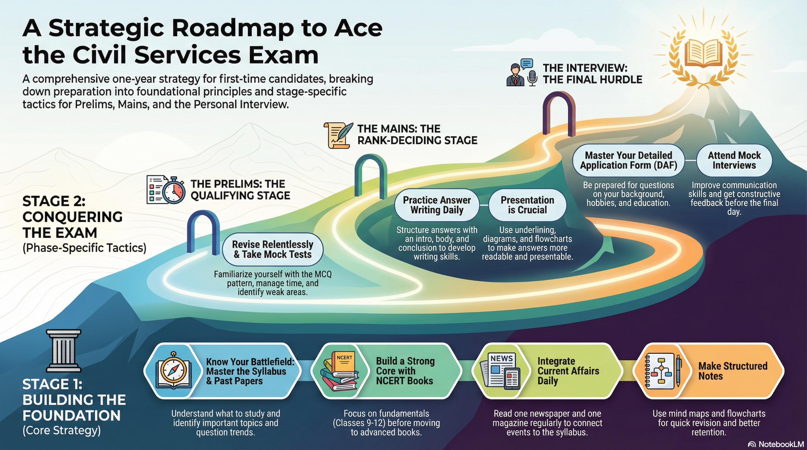

🏛️ The Ultimate Blueprint: How to Crack the UPSC Civil Services Exam
Complete Strategy for Success in One Year
The Civil Services Examination (CSE) is one of the most prestigious exams in the country, but it is also one of the most daunting. Every year, thousands work hard, yet only a few succeed.
Key Insight: Your first attempt is your most crucial one. This is when your enthusiasm is at its peak. Your goal shouldn't be just to clear the Prelims, but to crack the entire exam in a single go.
If you get your basics right, one year of focused preparation is sufficient. Here is the step-by-step strategy to guide you through this journey.

Navigation
🔹 Phase 1: Master the Basics
Before you dive into heavy reference books, you need to build a strong foundation.
Know Your Syllabus Like the Back of Your Hand
The syllabus is your roadmap. Many aspirants falter because they don't understand the scope of the exam.
You must have a copy of the syllabus handy at all times. It tells you exactly what to read and, more importantly, what not to read.
Analyze Previous Years' Papers
Don't shoot in the dark. Go through previous years' question papers to understand the orientation of the questions and identify important trends.
This will help you select the best reading material and might even help you score on repeated topics.
Stick to NCERTs
Start your preparation with NCERT books (Class 9–12). They are the best source for clarity on fundamental concepts.
Remember, UPSC tests basic knowledge and analytical ability, not specialized knowledge.
The "Less is More" Rule
Do not hoard books. A common mistake is referring to ten different sources for one subject.
Instead, limit yourself to one or two standard books per subject and the NCERTs.
📌 It is better to read one book ten times than ten books once.
🔹 Phase 2: Conquering Current Affairs
Current affairs are not a separate subject; they are the dynamic part of every topic in the syllabus.
The Routine
You must read a newspaper daily. I recommend The Hindu or The Indian Express.
Make this the first task of your day.
Time Management
Dedicate about 40 minutes to one hour to reading the paper.
If you are taking 3 hours, it is too much; if you finish in 15 minutes, it is too little.
Make Notes
Don't just read; write. Making notes helps you learn and memorize.
Focus on editorial sections and very important topics.
Connect the Dots
Develop the habit of linking news to your static syllabus.
If you read about the monsoon, connect it to the El Nino concept in your geography books.
🔹 Phase 3: The Prelims Strategy
Do not make the mistake of studying for Prelims and Mains separately. Your preparation must be integrated.
🎯 Cover the entire syllabus (Mains included) before you sit for the Prelims.
Treat All Subjects Equally
Don't fall in love with just one subject like History or Polity.
In Prelims, all subjects carry weight.
The Power of Revision
No matter how simple a topic seems, you must revise it.
Revise what you studied during the day for 2–3 hours.
If you postpone revision, the backlog will become unmanageable.
Test Yourself
Take mock tests regularly. They familiarize you with the exam pattern and help you identify mistakes.
Focus on MCQs during this phase.
🔹 Phase 4: Mastering the Mains
While Prelims is a qualifier, the Mains exam determines your rank and service.
This stage tests your writing and presentation skills, not just your memory.
Decode the Keywords
Read the questions carefully. Words like "critically analyze," "discuss," or "elaborate" demand different approaches.
For instance, "critically analyze" requires you to discuss both positives and negatives.
Structure Your Answers
A Good Answer Has Three Parts:
- Introduction: Brief background or context
- Body: Divided into logical parts using paragraphs or points
- Conclusion: Optimistic and forward-looking
Presentation Matters
Make your answer easy for the examiner to check:
- Underline important points and keywords
- Use flowcharts and tables to summarize data or save time
- Draw diagrams (especially in Geography) where necessary
Attempt All Questions
Speed is key. Practice writing daily to improve your pace.
Even if you don't know an answer perfectly, attempt it based on your understanding.
❗ Important: Leaving a question blank guarantees zero marks; attempting it gives you a fighting chance.
🔹 Phase 5: The Interview
The final hurdle is the personality test.
Be Honest with Your DAF
Your Detailed Application Form (DAF) is the basis of your interview.
Be thorough with every word you have written—your hobbies, graduation subject, or background.
Communication Skills
Express yourself clearly. Watch debates to improve vocabulary and articulation.
Attend 3–4 mock interviews before the final day to polish confidence and body language.
✅ Final Words of Advice
Choose Your Optional Wisely
Do not pick an optional based on scoring trends. Choose one you are comfortable with and interested in.
Overlap with General Studies is a bonus.
Don't Overdo It
You don't need 20 books or 10 coaching institutes.
You need consistency, patience, and hard work.
Believe in Yourself
No one is 100% perfect before the exam.
If you have covered the syllabus and revised 2–3 times, have faith and take the plunge.
🌟 Success in UPSC requires you to:
- Integrate your knowledge
- Complement reading with revision
- Direct all your efforts toward a single goal
Give it your best shot! 🚀